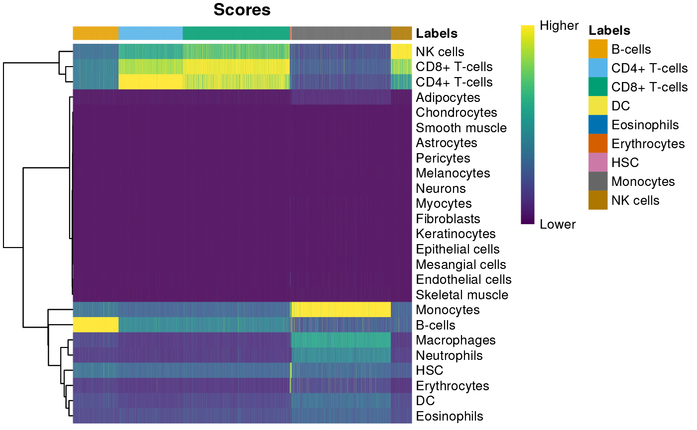

C.2 Annotating cell types
Source:vignettes/c_2_osca_cell_annotation.Rmd
c_2_osca_cell_annotation.RmdOrchestrating Single-Cell Analysis with Bioconductor
OSCA – an amazing resource!
Annotating cell types
This script is derived from the OSCA Basic book, Chapter 7: Cell type annotation. See the book for full details.
Initial analysis
## data retrieval
library(DropletTestFiles)
raw.path <- getTestFile("tenx-2.1.0-pbmc4k/1.0.0/raw.tar.gz")
#> see ?DropletTestFiles and browseVignettes('DropletTestFiles') for documentation
#> loading from cache
out.path <- file.path(tempdir(), "pbmc4k")
untar(raw.path, exdir=out.path)
## input
library(DropletUtils)
fname <- file.path(out.path, "raw_gene_bc_matrices/GRCh38")
sce.pbmc <- read10xCounts(fname, col.names=TRUE)
## annotation
library(scater)
rownames(sce.pbmc) <- uniquifyFeatureNames(
rowData(sce.pbmc)$ID, rowData(sce.pbmc)$Symbol
)
## qc
set.seed(100)
e.out <- emptyDrops(counts(sce.pbmc))
sce.pbmc <- sce.pbmc[, which(e.out$FDR <= 0.001)]
## normalization
library(scran)
set.seed(1000)
clusters <- quickCluster(sce.pbmc)
sce.pbmc <- computeSumFactors(sce.pbmc, cluster=clusters)
sce.pbmc <- logNormCounts(sce.pbmc)
## variance modeling
set.seed(1001)
dec.pbmc <- modelGeneVarByPoisson(sce.pbmc)
top.pbmc <- getTopHVGs(dec.pbmc, prop=0.1)
## dimensionality reduction
set.seed(10000)
sce.pbmc <- denoisePCA(sce.pbmc, subset.row=top.pbmc, technical=dec.pbmc)
set.seed(100000)
sce.pbmc <- runTSNE(sce.pbmc, dimred="PCA")
set.seed(1000000)
sce.pbmc <- runUMAP(sce.pbmc, dimred="PCA")
## clustering
g <- buildSNNGraph(sce.pbmc, k=10, use.dimred = 'PCA')
clust <- igraph::cluster_walktrap(g)$membership
colLabels(sce.pbmc) <- factor(clust)Using curated reference data
Use a curated reference data set, in this case derived from Blueprint and ENCODE data.
library(celldex)
ref <- BlueprintEncodeData()
#> Warning: 'BlueprintEncodeData' is deprecated.
#> Use 'celldex::BlueprintEncodeData' instead.
#> See help("Deprecated")
#> see ?celldex and browseVignettes('celldex') for documentation
#> loading from cache
#> see ?celldex and browseVignettes('celldex') for documentation
#> loading from cache
colData(ref) |>
dplyr::as_tibble()
#> # A tibble: 259 × 3
#> label.main label.fine label.ont
#> <chr> <chr> <chr>
#> 1 Neutrophils Neutrophils CL:0000775
#> 2 Monocytes Monocytes CL:0000576
#> 3 Neutrophils Neutrophils CL:0000775
#> 4 HSC MEP CL:0000050
#> 5 Neutrophils Neutrophils CL:0000775
#> 6 Monocytes Monocytes CL:0000576
#> 7 Neutrophils Neutrophils CL:0000775
#> 8 Monocytes Monocytes CL:0000576
#> 9 Neutrophils Neutrophils CL:0000775
#> 10 Neutrophils Neutrophils CL:0000775
#> # ℹ 249 more rows
colData(ref) |>
dplyr::as_tibble() |>
dplyr::count(label.main, sort = TRUE)
#> # A tibble: 25 × 2
#> label.main n
#> <chr> <int>
#> 1 HSC 38
#> 2 Endothelial cells 26
#> 3 Macrophages 25
#> 4 Neutrophils 23
#> 5 Fibroblasts 20
#> 6 Epithelial cells 18
#> 7 Monocytes 16
#> 8 Smooth muscle 16
#> 9 CD4+ T-cells 14
#> 10 Adipocytes 9
#> # ℹ 15 more rowsAnnotate our data using the ‘main’ label for cell type
library(SingleR)
## assign each cell in sce.pbmc to a type
pred <- SingleR(test=sce.pbmc, ref=ref, labels=ref$label.main)
#> Warning: useNames = NA is deprecated. Instead, specify either useNames = TRUE
#> or useNames = TRUE.
#> Warning: useNames = NA is deprecated. Instead, specify either useNames = TRUE
#> or useNames = TRUE.
#> Warning: useNames = NA is deprecated. Instead, specify either useNames = TRUE
#> or useNames = TRUE.
#> Warning: useNames = NA is deprecated. Instead, specify either useNames = TRUE
#> or useNames = TRUE.
#> Warning: useNames = NA is deprecated. Instead, specify either useNames = TRUE
#> or useNames = TRUE.
#> Warning: useNames = NA is deprecated. Instead, specify either useNames = TRUE
#> or useNames = TRUE.
#> Warning: useNames = NA is deprecated. Instead, specify either useNames = TRUE
#> or useNames = TRUE.
#> Warning: useNames = NA is deprecated. Instead, specify either useNames = TRUE
#> or useNames = TRUE.
#> Warning: useNames = NA is deprecated. Instead, specify either useNames = TRUE
#> or useNames = TRUE.
#> Warning: useNames = NA is deprecated. Instead, specify either useNames = TRUE
#> or useNames = TRUE.
#> Warning: useNames = NA is deprecated. Instead, specify either useNames = TRUE
#> or useNames = TRUE.
#> Warning: useNames = NA is deprecated. Instead, specify either useNames = TRUE
#> or useNames = TRUE.
#> Warning: useNames = NA is deprecated. Instead, specify either useNames = TRUE
#> or useNames = TRUE.
#> Warning: useNames = NA is deprecated. Instead, specify either useNames = TRUE
#> or useNames = TRUE.
#> Warning: useNames = NA is deprecated. Instead, specify either useNames = TRUE
#> or useNames = TRUE.
#> Warning: useNames = NA is deprecated. Instead, specify either useNames = TRUE
#> or useNames = TRUE.
#> Warning: useNames = NA is deprecated. Instead, specify either useNames = TRUE
#> or useNames = TRUE.
#> Warning: useNames = NA is deprecated. Instead, specify either useNames = TRUE
#> or useNames = TRUE.
#> Warning: useNames = NA is deprecated. Instead, specify either useNames = TRUE
#> or useNames = TRUE.
#> Warning: useNames = NA is deprecated. Instead, specify either useNames = TRUE
#> or useNames = TRUE.
#> Warning: useNames = NA is deprecated. Instead, specify either useNames = TRUE
#> or useNames = TRUE.
#> Warning: useNames = NA is deprecated. Instead, specify either useNames = TRUE
#> or useNames = TRUE.
#> Warning: useNames = NA is deprecated. Instead, specify either useNames = TRUE
#> or useNames = TRUE.
#> Warning: useNames = NA is deprecated. Instead, specify either useNames = TRUE
#> or useNames = TRUE.
#> Warning: useNames = NA is deprecated. Instead, specify either useNames = TRUE
#> or useNames = TRUE.
#> Warning: useNames = NA is deprecated. Instead, specify either useNames = TRUE
#> or useNames = TRUE.
pred
#> DataFrame with 4300 rows and 4 columns
#> scores labels delta.next
#> <matrix> <character> <numeric>
#> AAACCTGAGAAGGCCT-1 0.251873:0.118890:0.287805:... Monocytes 0.4088010
#> AAACCTGAGACAGACC-1 0.280080:0.133100:0.334590:... Monocytes 0.0666194
#> AAACCTGAGATAGTCA-1 0.267468:0.148610:0.298052:... Monocytes 0.2941808
#> AAACCTGAGGCATGGT-1 0.211503:0.153752:0.345878:... CD4+ T-cells 0.1162873
#> AAACCTGCAAGGTTCT-1 0.218346:0.155343:0.367597:... CD8+ T-cells 0.1129399
#> ... ... ... ...
#> TTTGGTTTCGCTAGCG-1 0.294522:0.133758:0.392261:... Monocytes 0.0665587
#> TTTGTCACACTTAACG-1 0.197799:0.131324:0.347844:... NK cells 0.0543276
#> TTTGTCACAGGTCCAC-1 0.225583:0.128985:0.409526:... NK cells 0.0998073
#> TTTGTCAGTTAAGACA-1 0.216604:0.146328:0.408886:... B-cells 0.0668176
#> TTTGTCATCCCAAGAT-1 0.287555:0.134715:0.330531:... Monocytes 0.0634004
#> pruned.labels
#> <character>
#> AAACCTGAGAAGGCCT-1 Monocytes
#> AAACCTGAGACAGACC-1 Monocytes
#> AAACCTGAGATAGTCA-1 Monocytes
#> AAACCTGAGGCATGGT-1 CD4+ T-cells
#> AAACCTGCAAGGTTCT-1 CD8+ T-cells
#> ... ...
#> TTTGGTTTCGCTAGCG-1 Monocytes
#> TTTGTCACACTTAACG-1 NK cells
#> TTTGTCACAGGTCCAC-1 NK cells
#> TTTGTCAGTTAAGACA-1 B-cells
#> TTTGTCATCCCAAGAT-1 Monocytes
pred |>
dplyr::as_tibble() |>
dplyr::count(labels)
#> # A tibble: 9 × 2
#> labels n
#> <chr> <int>
#> 1 B-cells 578
#> 2 CD4+ T-cells 815
#> 3 CD8+ T-cells 1358
#> 4 DC 1
#> 5 Eosinophils 1
#> 6 Erythrocytes 8
#> 7 HSC 14
#> 8 Monocytes 1258
#> 9 NK cells 267
plotScoreHeatmap(pred)
#> Warning: useNames = NA is deprecated. Instead, specify either useNames = TRUE
#> or useNames = TRUE.
#> Warning: useNames = NA is deprecated. Instead, specify either useNames = TRUE
#> or useNames = TRUE.
#> Warning: useNames = NA is deprecated. Instead, specify either useNames = TRUE
#> or useNames = TRUE.
Session information
This document was produced with the following R software:
sessionInfo()
#> R version 4.3.0 (2023-04-21)
#> Platform: x86_64-pc-linux-gnu (64-bit)
#> Running under: Ubuntu 22.04.2 LTS
#>
#> Matrix products: default
#> BLAS: /usr/lib/x86_64-linux-gnu/openblas-pthread/libblas.so.3
#> LAPACK: /usr/lib/x86_64-linux-gnu/openblas-pthread/libopenblasp-r0.3.20.so; LAPACK version 3.10.0
#>
#> locale:
#> [1] LC_CTYPE=en_US.UTF-8 LC_NUMERIC=C
#> [3] LC_TIME=en_US.UTF-8 LC_COLLATE=en_US.UTF-8
#> [5] LC_MONETARY=en_US.UTF-8 LC_MESSAGES=en_US.UTF-8
#> [7] LC_PAPER=en_US.UTF-8 LC_NAME=C
#> [9] LC_ADDRESS=C LC_TELEPHONE=C
#> [11] LC_MEASUREMENT=en_US.UTF-8 LC_IDENTIFICATION=C
#>
#> time zone: Etc/UTC
#> tzcode source: system (glibc)
#>
#> attached base packages:
#> [1] stats4 stats graphics grDevices utils datasets methods
#> [8] base
#>
#> other attached packages:
#> [1] SingleR_2.3.4 celldex_1.11.1
#> [3] scran_1.29.0 EnsDb.Hsapiens.v86_2.99.0
#> [5] ensembldb_2.25.0 AnnotationFilter_1.25.0
#> [7] GenomicFeatures_1.53.0 AnnotationDbi_1.63.1
#> [9] scater_1.29.0 ggplot2_3.4.2
#> [11] scuttle_1.11.0 DropletUtils_1.21.0
#> [13] SingleCellExperiment_1.23.0 SummarizedExperiment_1.31.1
#> [15] Biobase_2.61.0 GenomicRanges_1.53.1
#> [17] GenomeInfoDb_1.37.1 IRanges_2.35.1
#> [19] S4Vectors_0.39.1 BiocGenerics_0.47.0
#> [21] MatrixGenerics_1.13.0 matrixStats_1.0.0
#> [23] DropletTestFiles_1.11.0
#>
#> loaded via a namespace (and not attached):
#> [1] RcppAnnoy_0.0.20 later_1.3.1
#> [3] BiocIO_1.11.0 bitops_1.0-7
#> [5] filelock_1.0.2 tibble_3.2.1
#> [7] R.oo_1.25.0 XML_3.99-0.14
#> [9] lifecycle_1.0.3 edgeR_3.43.4
#> [11] rprojroot_2.0.3 lattice_0.21-8
#> [13] magrittr_2.0.3 limma_3.57.4
#> [15] sass_0.4.6 rmarkdown_2.22
#> [17] jquerylib_0.1.4 yaml_2.3.7
#> [19] metapod_1.9.0 httpuv_1.6.11
#> [21] RColorBrewer_1.1-3 DBI_1.1.3
#> [23] zlibbioc_1.47.0 Rtsne_0.16
#> [25] purrr_1.0.1 R.utils_2.12.2
#> [27] RCurl_1.98-1.12 rappdirs_0.3.3
#> [29] GenomeInfoDbData_1.2.10 ggrepel_0.9.3
#> [31] irlba_2.3.5.1 pheatmap_1.0.12
#> [33] dqrng_0.3.0 pkgdown_2.0.7
#> [35] DelayedMatrixStats_1.23.0 codetools_0.2-19
#> [37] DelayedArray_0.27.5 xml2_1.3.4
#> [39] tidyselect_1.2.0 farver_2.1.1
#> [41] ScaledMatrix_1.9.1 viridis_0.6.3
#> [43] BiocFileCache_2.9.0 GenomicAlignments_1.37.0
#> [45] jsonlite_1.8.5 BiocNeighbors_1.19.0
#> [47] ellipsis_0.3.2 systemfonts_1.0.4
#> [49] tools_4.3.0 progress_1.2.2
#> [51] ragg_1.2.5 Rcpp_1.0.10
#> [53] glue_1.6.2 gridExtra_2.3
#> [55] SparseArray_1.1.10 xfun_0.39
#> [57] dplyr_1.1.2 HDF5Array_1.29.3
#> [59] withr_2.5.0 BiocManager_1.30.21
#> [61] fastmap_1.1.1 rhdf5filters_1.13.2
#> [63] bluster_1.11.1 fansi_1.0.4
#> [65] digest_0.6.31 rsvd_1.0.5
#> [67] R6_2.5.1 mime_0.12
#> [69] textshaping_0.3.6 colorspace_2.1-0
#> [71] biomaRt_2.57.1 RSQLite_2.3.1
#> [73] R.methodsS3_1.8.2 utf8_1.2.3
#> [75] generics_0.1.3 rtracklayer_1.61.0
#> [77] prettyunits_1.1.1 httr_1.4.6
#> [79] S4Arrays_1.1.4 uwot_0.1.14
#> [81] pkgconfig_2.0.3 gtable_0.3.3
#> [83] blob_1.2.4 XVector_0.41.1
#> [85] htmltools_0.5.5 ProtGenerics_1.33.0
#> [87] scales_1.2.1 png_0.1-8
#> [89] knitr_1.43 rjson_0.2.21
#> [91] curl_5.0.1 cachem_1.0.8
#> [93] rhdf5_2.45.0 stringr_1.5.0
#> [95] BiocVersion_3.18.0 parallel_4.3.0
#> [97] vipor_0.4.5 restfulr_0.0.15
#> [99] desc_1.4.2 pillar_1.9.0
#> [101] grid_4.3.0 vctrs_0.6.2
#> [103] promises_1.2.0.1 BiocSingular_1.17.0
#> [105] dbplyr_2.3.2 beachmat_2.17.8
#> [107] xtable_1.8-4 cluster_2.1.4
#> [109] beeswarm_0.4.0 evaluate_0.21
#> [111] cli_3.6.1 locfit_1.5-9.8
#> [113] compiler_4.3.0 Rsamtools_2.17.0
#> [115] rlang_1.1.1 crayon_1.5.2
#> [117] fs_1.6.2 ggbeeswarm_0.7.2
#> [119] stringi_1.7.12 viridisLite_0.4.2
#> [121] BiocParallel_1.35.2 munsell_0.5.0
#> [123] Biostrings_2.69.1 lazyeval_0.2.2
#> [125] Matrix_1.5-4.1 ExperimentHub_2.7.1
#> [127] hms_1.1.3 sparseMatrixStats_1.13.0
#> [129] bit64_4.0.5 Rhdf5lib_1.23.0
#> [131] KEGGREST_1.41.0 statmod_1.5.0
#> [133] shiny_1.7.4 highr_0.10
#> [135] interactiveDisplayBase_1.39.0 AnnotationHub_3.9.1
#> [137] igraph_1.4.3 memoise_2.0.1
#> [139] bslib_0.5.0 bit_4.0.5